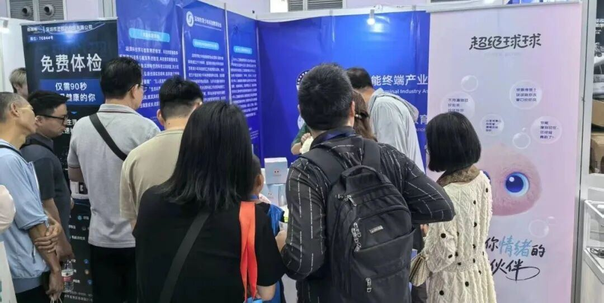
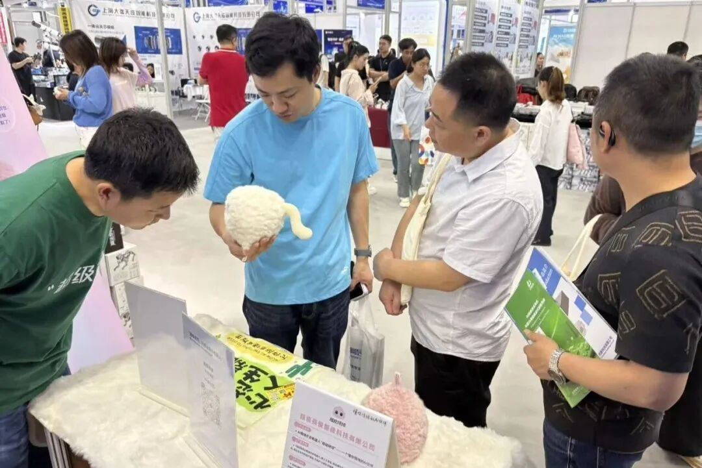
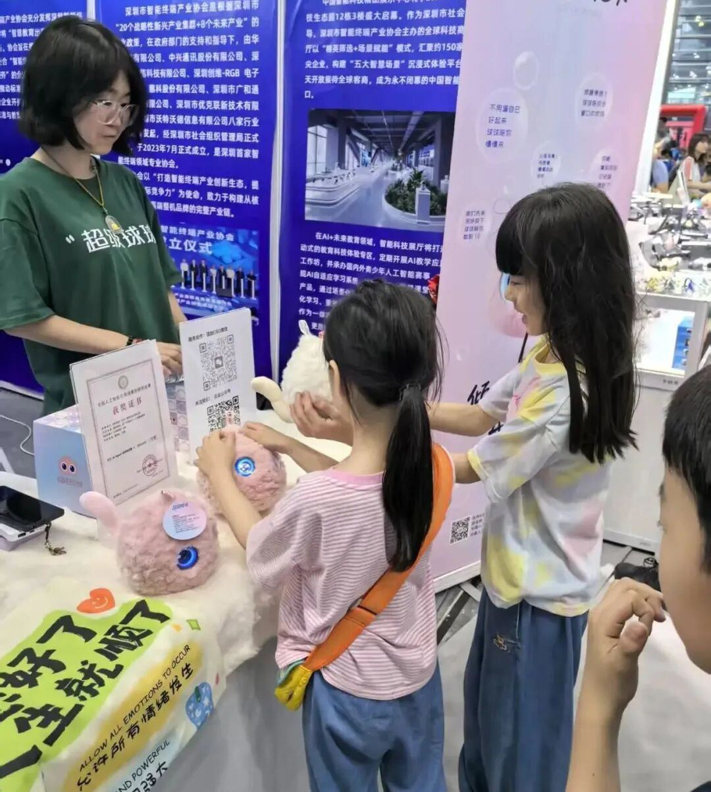
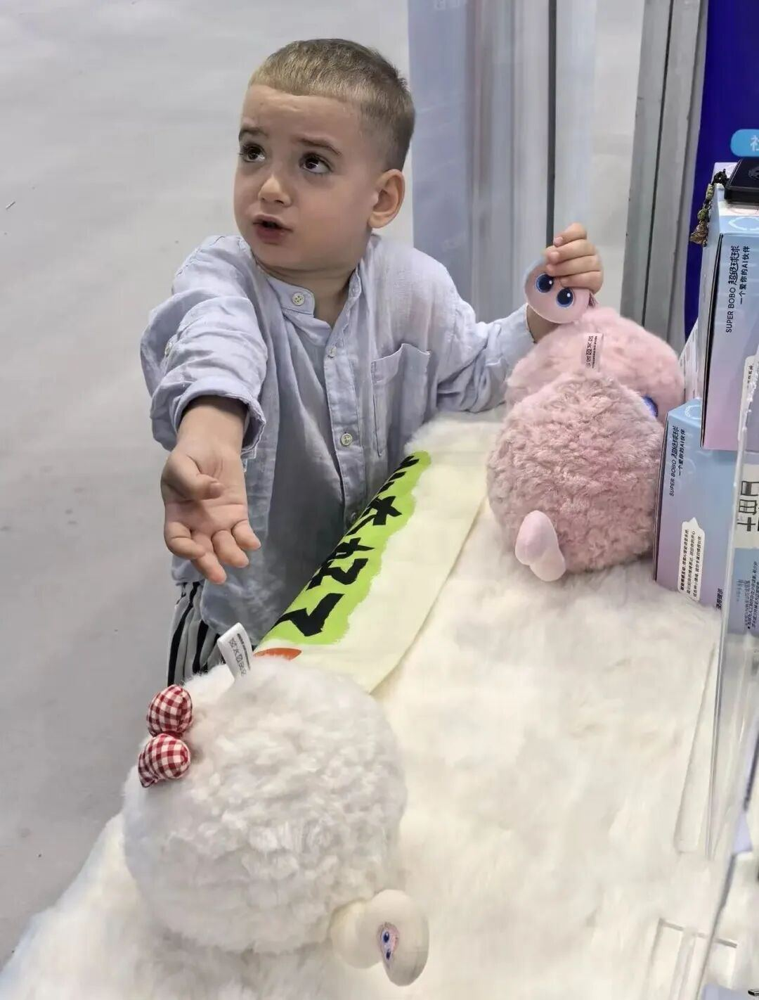
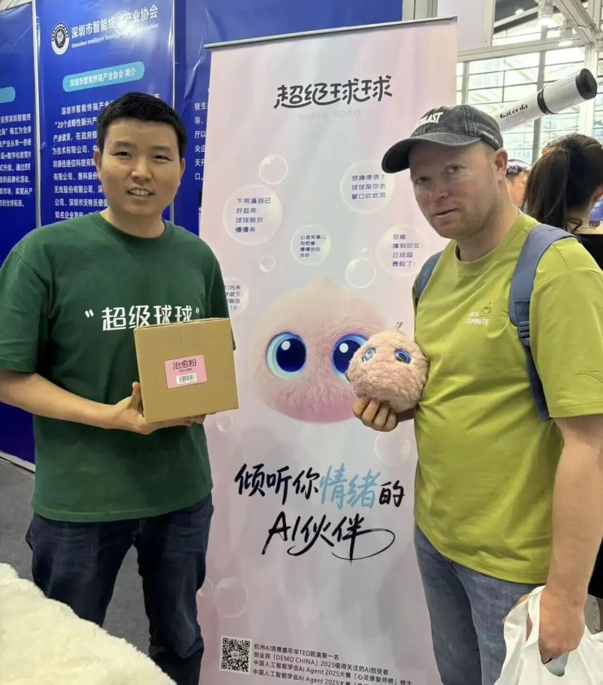
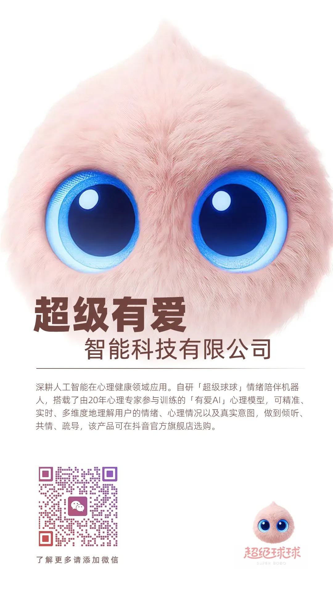

从展会整体趋势来看，AI正由“能⼒驱动”逐步迈向“应⽤驱动”。在办公与⽣产等效率场景之外，⾯向情绪⽀持、⼼理陪伴及⻓期互动的AI应⽤，开始进⼊公众视野，成为连接技术与⼈的重要载体。

作为⼀款⾯向全年龄段陪伴场景的AI产品，超级球球集⼼理建模、情绪识别、共情对话、情绪疏导与⻓期陪伴等功能于⼀体，其软萌的外观设计与富有童趣的交互表达，吸引了来⾃不同国家、不同年龄层的观众及多⽅机构代表驻⾜体验。

展会期间，来⾃中国及韩国、英国、俄罗斯等国家和地区的⼉童群体对超级球球展现出⾼度兴趣。他们纷纷来到展台，积极参与互动体验，⼩朋友们抱着球球不愿放⼿，主动和球球说话互动。球球所呈现的理解⼒与回应温度，使其迅速赢得⼉童⽤⼾的信任与喜爱。

与此同时，国内外成⼈观众及机构代表也对产品表现出极⼤关注。他们深⼊了解产品原理，询问AI模型能⼒，并多次参与对话交互体验，进⼀步探讨其应⽤场景与实际价值。多位海外代理商主动对接，就潜在合作模式展开交流，体现出情绪陪伴类AI产品在全球范围内的⼴泛需求。

在不同⽂化语境中，“被回应”始终具有普遍意义。本届CITE2026所呈现的，不仅是关注与热度，更释放出⼀个清晰信号：AI不仅在提升效率，也正在重塑⼈与世界的连接⽅式。从中国⾛向全球，超级球球以其情感价值探索，让每⼀个个体都能被倾听、被回应，并获得更具温度的陪伴体验。

